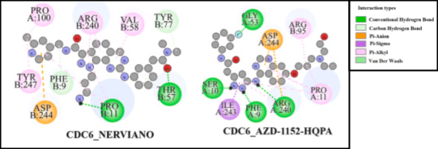

Everyone has heard about cancer, a disease characterized by uncontrolled cell growth, and its most common treatment, chemotherapy. But have you ever thought about why people who undergo chemotherapy often lose their hair? The answer is usually chemotherapy's lack of specificity. It kills any rapidly dividing cell, including hair follicles, while cancer cells can still develop resistance against it.
These challenges highlight the need to explore drugs that target cancer-driving genes more precisely. This shift toward specialized medicine usually requires discovering and testing new drugs, which can be extremely time-consuming. As a result, researchers have turned to drug repurposing, the process of identifying new therapeutic uses for drugs that already exist.
Repurposed drugs are especially important for lung cancer treatment because lung cancer cells often contain diverse gene mutations that can promote chemotherapy resistance. Lung cancer tumors are linked to the highest cancer mortality rates worldwide, and non-small cell lung cancer, or NSCLC, accounts for roughly 80-85% of lung cancer cases. Patients with NSCLC generally face poor survival outcomes, making faster treatment discovery an urgent need.
To address that need, Sultana et al. used computational approaches to search for new treatments for NSCLC patients. Their study focused on repurposing existing drugs that target key differentially expressed genes, or KGs. These are mutated genes that support cancer cell growth by being overexpressed, contributing to continuous growth, or underexpressed, removing barriers that normally limit cancer spread.
To find overexpressed KGs in NSCLC, the researchers used computer programs to analyze gene expression data from eight public databases and compare tumor tissue samples with healthy tissue samples. This process identified 37 overexpressed key genes. One of them was CDC6, a gene that codes for a protein involved in initiating DNA replication.
When CDC6 is overexpressed, it can promote uncontrolled cancer cell growth and migration. Patients with high CDC6 expression had worse survival outcomes than patients with low CDC6 expression, suggesting that CDC6 may be a meaningful therapeutic target.
To target CDC6 with repurposed drugs, Sultana et al. analyzed public databases containing protein structures and drug structures. They obtained 3D structures of the CDC6 protein and three candidate drugs: AZD-1152-HQPA, NERVIANO, and SR8278. When a drug targets a protein, it binds like a key fitting into a lock.
This interaction can be predicted through molecular docking, which uses 3D structures to estimate binding affinity in kilocalories per mole. In this study, any binding affinity below -9.0 kcal/mol was described as strong. Two drugs met that standard: AZD-1152-HQPA at -9.4 kcal/mol and NERVIANO at -9.5 kcal/mol.

The docking model showed several kinds of intermolecular forces between the drugs and the CDC6 protein, including hydrogen bonds, Van der Waals interactions, and pi interactions. Although these results are predictive, they suggest that AZD-1152-HQPA and NERVIANO could interfere with CDC6's role in DNA replication, potentially leading to cancer cell death and improved patient survival.
This work sets the foundation for future drug repurposing studies because these candidate drugs may be more specific than general chemotherapies. For cancer patients, advances in computational power could help researchers create targeted treatments designed around each tumor's unique molecular profile.
The findings are still early. Computational predictions must be tested in cells, animals, and eventually clinical studies before they can become treatments. Still, the study shows how bioinformatics and molecular docking can narrow the search for possible therapies and offer new directions for NSCLC research.
Works Cited
Sultana, A., Alam, M. S., Khanam, A., & Liang, H. (2025). Unraveling the molecular landscape of non-small cell lung cancer: Integrating bioinformatics and statistical approaches to identify biomarkers and drug repurposing. Computers in Biology and Medicine, 187, 109744. https://doi.org/10.1016/j.compbiomed.2025.109744
Shanker, M., Willcutts, D., Roth, J. A., & Ramesh, R. (2010). Drug resistance in lung cancer. https://pmc.ncbi.nlm.nih.gov/articles/PMC5312467/
Cancer Atlas. (2026). Lung cancer. https://canceratlas.cancer.org/burden-of-cancer/lung-cancer/
Cleveland Clinic. (2025). Non-small cell lung cancer. https://my.clevelandclinic.org/health/diseases/6203-non-small-cell-lung-cancer
American Cancer Society. (n.d.). Lung cancer survival rates. https://www.cancer.org/cancer/types/lung-cancer/detection-diagnosis-staging/survival-rates.html